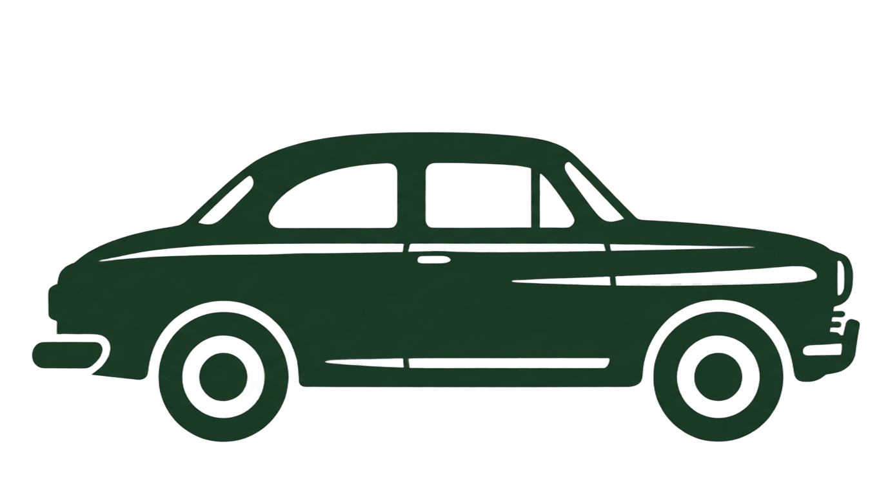
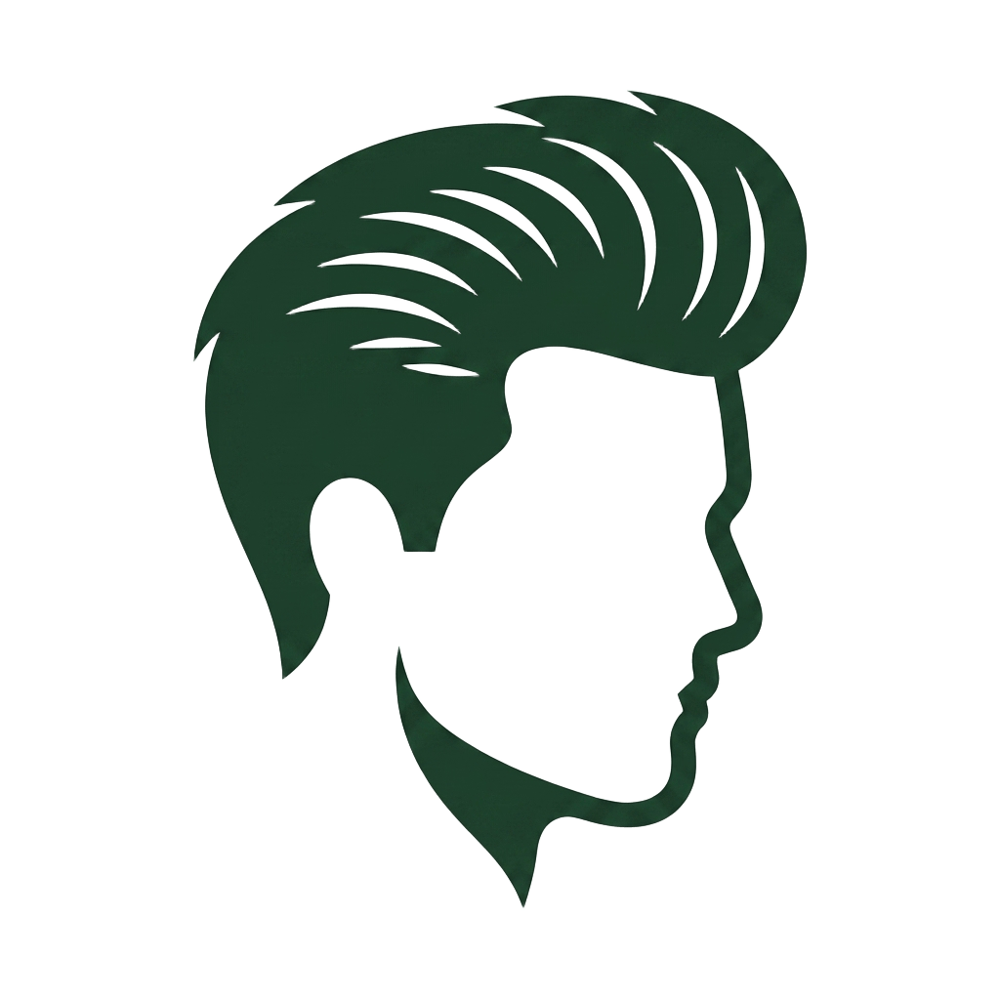

Hombre Urbano
Para el hombre que busca un estilo moderno y sofisticado, con productos que se adapten a su ritmo de vida en la ciudad.

Para el hombre que busca un estilo moderno y sofisticado, con productos que se adapten a su ritmo de vida en la ciudad.

Para el hombre que prefiere un estilo atemporal y elegante, con productos que resalten su personalidad y cuidado personal.
Para el hombre que disfruta de la naturaleza y la aventura, con productos resistentes y versátiles que se adapten a su estilo de vida activo.

Para el hombre que busca romper con lo convencional y expresar su individualidad, con productos que reflejen su personalidad única y audaz.
Responde unas preguntas rapidas y descubre la rutina perfecta para tu barba, cabello y rostro
PASO 1/5